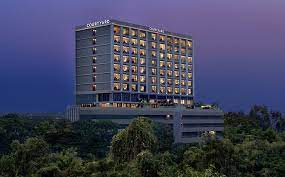
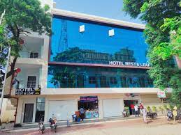

HOTELS

Courtyard by Marriott Vadodara features an outdoor swimming pool, fitness centre, a terrace and restaurant in Vadodara. Among the facilities at this property are a business centre and a concierge service, along with free WiFi throughout the property. The accommodation provides room service, a 24-hour front desk and currency exchange for guests. The hotel will provide guests with air-conditioned rooms with a wardrobe, a kettle, a minibar, a safety deposit box, a flat-screen TV and a private bathroom with a shower. At Courtyard by Marriott Vadodara every room is fitted with bed linen and towels.
Time Square Club
Set in Bhuj, 13 km from Shree Swaminarayan Temple, Time Square Club, Resort & Spa offers accommodation with an outdoor swimming pool, free private parking, a fitness centre and a restaurant. This 5-star hotel offers room service and a 24-hour front desk. The accommodation features airport transfers, while a car rental service is also available. Complete with a private bathroom equipped with a shower and free toiletries, the units at the hotel have a flat-screen TV and air conditioning, and selected rooms here will provide you with a balcony. The rooms will provide guests with a wardrobe and a kettle.

Hotel rest and leaf
Featuring 2-star accommodation, hotelrest&leaf is situated in Anand, 5.2 km from Anand Railway Station and 43 km from Vadodara Railway Station. This 2-star hotel has air-conditioned rooms with a private bathroom. The accommodation features a 24-hour front desk, airport transfers, room service and free WiFi. The rooms in the hotel are fitted with a flat-screen TV and slippers. Lakshmi Vilas Palace is 46 km from hotelrest&leaf, while Mogari is less than 1 km from the property. The nearest airport is Vadodara Airport, 47 km from the accommodation.